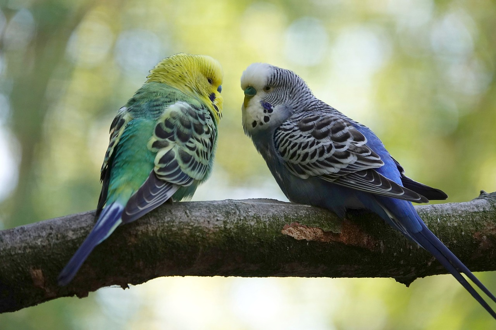

¡BIENVENIDOS!
¡Hola, amantes de las plumas y los trinos! ¿Estás listo para embarcarte en un viaje al fascinante mundo de las aves en Euskadi? ¡Entonces has llegado al lugar adecuado!
En nuestra página, exploraremos los cielos euskaldunes para descubrir las aves más increíbles deesta hermosa tierra. Desde los bosques frondosos hasta las costas brumosas, cada rincón de Euskadi tiene una historia de plumaje que contar.